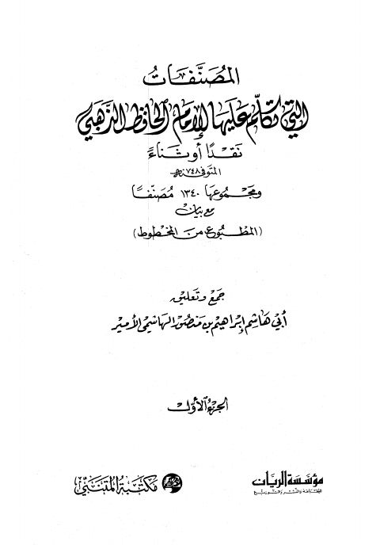

Downloads need an internet connection.
المصنفات التي تكلم عليها الإمام الحافظ الذهبي
Authors: إبراهيم بن منصور الهاشمي الأمير
Publishers: مؤسسة الريان مكتبة المتنبي
**▫️ العنوان: المصنفات التي تكلم عليها الإمام الحافظ الذهبي** ▪️ المؤلف: #إبراهيم_بن_منصور_الهاشمي_الأمير ▫️ الناشر: #مؤسسة_الريان • #مكتبة_المتنبي ▪️ تاريخ النشر: 1424هــ 2003م ▫️ بلد النشر: الدمام، #السعودية ▪️ الطبعة: 1 ▫️ عدد الأجزاء: 2 ▪️ الصفحات: 1070 ▫️ نوع الوعاء: #كتاب ▪️ التصنيف الرئيسي: #الحديث_وعلومه ▫️ التصنيف الفرعي: #تخريج ۪